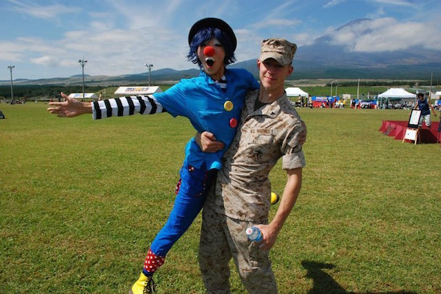

Learn More About Me
- 

I am Andrew Krodinger. I grew up in a small town south of St. Louis not knowing what I wanted to do with my life. I joined the United States Marine Corps to try and figure that out. I was a 0651 Data Network Specialist, the civilian equivalent of a systems administrator. I spent four years dedicated to bettering myself, training my brothers in arms, and serving my country. I would not trade the experience for anything in the world. Being a systems administrator got me interested in computing in general. I realized quickly that I like to create versus deploying or managing networks. Once I received my Honorable Discharge I immediately began to seek out top tier Computer Science Degrees. I landed at CU Boulder because of its up and coming CS department. They offered a re-vamped class structure that had classes on new current technologies. I enjoyed my time at CU. It was a great environment to really seek out what you were interested in and try and further yourself or complete a project in said area. While I was an undergraduate I was able to hold a position at the Laboratory for Atmospheric and Space Physics (LASP), first in the IT department, and then in the Mission Operations and Data Structures Department. I worked on retrieving data from current satellite missions and editing the data structures that were currently in place to make them quicker, faster, and all around better. I also created web plugins to offer new functionality to our database software. I did a large QA project, implementing MGUnit - an IDL testing framework - across development and legacy code. I felt a great sense of pride working as LASP. I was directly involved with things that were going on in space a million miles away from me, and I always found that fascinating. I will be graduating from CU in the summer of 2016, and I will be looking for similar jobs to what I am currently doing now. I enjoy flight/drones, working with scientist and other professionals, and the sense of pride you get from creating something that is useful and could inevitably help change the world.
Skills
Click to learn more.
I have upper division class experience with JavaScript. Here is my work for a class on Big Data that utilized Javascript and Javascript libraries to visualize data. Big Data
The Big Data class culminated in a competitive presentation at the Zayo Group headquarters, a fiber/bandwith/cloud services company. My group won with our Big vs Small business model. Twitter Recognition
Here is my work for a class in rapid prototyping that used Javascript to create web applications for miscellaneous uses. Rapid Prototyping
The Rapid Prototyping class also ended with a presentation at the Zayo Group. They asked us to create a fiber pricing app in two weeks. Here is our result. Once opened click the map to begin. Zayo Fiber Pricing App
Click to learn more.
The heart of the core curriculum at CU Boulder is based in C/C++. My entire theoretical backround has been instructed to me in C/C++.
The Data Systems and Data Structures classes both make use of C/C++ for coding assignments that range from the typical Bomb/Buffer labs to Performance enhancement and Shell creation. Algorithms is also taught in the C/C++ framework.
Click to learn more.
The bulk of my workload in the Data Systems section at LASP was done in IDL using the IDL IDE. During this time I implemented a unit testing framework on current and legacy IDL code. The testing framework was deployed around code that tests satellite telemetry, intrument data, and critical mission data.
The unit testing framework is known as mgunit. In order to impement these changes I also had to create Jenkins plug-ins to optimize the environment for use with mgunit. Check out mgunit Here.

Click to learn more.
The intro to progamming class (CSCI 1300) is taught in Python. I think because of this I often use Python to rapidly prototype ideas becasue of its ease of use. While I consider it a fine language it is a bit slow and the documentation can be a pain.
I have used Python to create small text based game in the past. I have also implemented a Python turtle graphics simulator.

Click to learn more.
The latter half of classes at CU are taught in Java so we can see implementation in a "memory-safe" language. The second half of Intro to Progamming, Data Structures, Data Systems, and Algorithms are all instructed in Java.
Becasue of this Java is another language I am very comfortable with. Most of my theoretical background has a basis in Java. Here is a project that uses Java to examine pixels of an image to categorize it.
Click to learn more.
I have a small sample of experience coding in C#. I created a game with others using Unity for a final project in a class.
We created a game in which you are the butler of a haunted house. You have minnions in which you can drop to raise the "scare meter" of the NPC on screen. You want to scare the NPC in the house but not so much that they are too scared and leave the mansion. The objective is to let the NPC explore the area and coax them toward the end goal while at the same time raising their "scare meter" as high as possible before they reach the end of the level. So in a way you are like the silent hand of the haunted house, helping the player break the curse by guiding them but at the same time not alerting your master to the plot.
Check out the repository here.